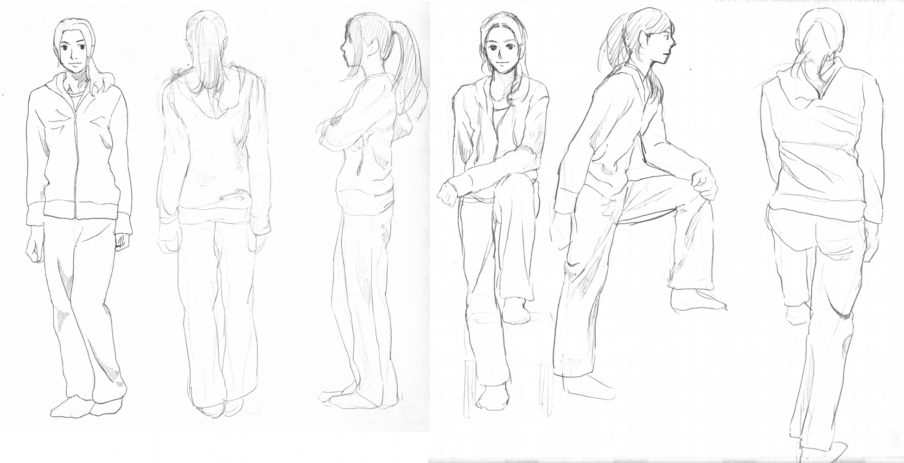

なかなか更新頻度を維持できていないブログですが改めて再開します。前回の記事で考えていた意味記憶についてまだ上手くまとめられていないので一旦保留ということにします。考え方についてのテーマは一時休止、再び実技をテーマに執筆しようと思います。
お絵描きの練習に使う画材の種類
ポピュラーな画材を挙げると、鉛筆、シャープペン、ボールペン、筆ペン、マーカー、インク、ペンタブといったところでしょうか。おそらく大抵の人は練習やアタリ線には鉛筆やシャープペン、好みによっては一発描きにポールペンやマーカー、勢いのある渋い線を描きたいときは筆ペン、イラストを描くときのペン入れには筆ペンやマーカーやインクを使っているのではないでしょうか。そしてデジタルの力をふんだんに使って全行程をペンタブなど。
私は絵を描き始めて半年間くらいは0.5mmのシャープペンをHBで使っていました。理由は描き始めた瞬間に手に持っていたからです。特に問題なく練習を続けていたのですが、半年くらい経った頃にアニメーターという仕事について知る事になります。アニメーターは主に2Bの鉛筆を使って輪郭線という線だけで強弱を表現します（見る人側からは見分けられないほど繊細な表現なのでしょう）。このとき、線を描くにしても表現力が豊な画材を使った方がいいかもしれないと思いました。それから今に至るまでは2BとHBの鉛筆を使い分けて絵を描いてきました。
ところで、表現力が発揮されるのは画材を使いこなす技術あってのことです。そこで自分の描いている線を改めて見直してみると、クロッキーをしている線が太い線であることに気づきました。太い線はここぞというときに使ってこそ強弱が生まれるというものです。一様に太い線で描かれた人物は躍動感に乏しく、さらに輪郭で囲われた範囲の面積の見た目にも誤差を生じるので、デッサンの狂いが誤摩化されて気づきにくくなります。今まで大した違和感なく描けていたのは、気持ちを乗せて引いた線なので見直した時にも感情的な補正がかかっていたからだと思います。例えば、「グッと」引いた線は数秒後に観察しても「グッと」した感じに見えてちょっといい感じに見えます。これは良くない。
線の太さによる見え方の違い
筆圧で線の太さを調節して強弱をつけられるのは鉛筆の利点ですが、それはつまり表現力によってプレーンの人物画に躍動感を付加していることになります。もしかしたらデッサンの狂いも補っている可能性があります。それならばいっその事、細い線での練習を再開してみてはどうだろうか。0.3mmのシャープペンでクロッキーをすると、引っ張った軌跡どおりの細い線しか描く事ができません。そういう誤摩化しが利かない画材で練習することで人体骨格の微妙な凹凸や、正確な寸法がデッサンできるようになると思います。ちょっとクロッキーでもしてみましょう。

完成図を見ただけではあまり違いはないですね。しかし、やはり描いている最中の心境は違いました。細いシャープペンの線より、太い鉛筆の線の方が安心感がありました。多少は勢いに任せてもいいかなという...。もう少し具体的にいうと、太い線は輪郭線というより陰影で描いている感じが多少あります。例えば、突起している部分はわざと線を途切らせてみたりすると綺麗に見えるというのは、突起部に光が当たりやすいので眩しくて本来は輪郭が見えなくなるということなのでしょう。一方、細い線はまさに輪郭線を描くという感じで、一発勝負のような緊張感や失敗が顕著になる心配が大きいです。
余談として、漫画家の人はペン入れにGペンを使うことがあるとおもいます。好みによりますが、細い線を描けるペン先を使う人の絵は線の密度を利用した表現を得意のようです。ちなみに漫画でも輪郭線はペン先の角度によって太さを調節できるようですが、やはりあまりにも太い線で描いてしまうとトーンや黒ベタの部分とのコントラストが生かしきれなくなるような気がします。当然、太い輪郭線でも格好いい絵を描かれている漫画家の方もいますが、線の太さに関しては小は大を兼ねるというわけで細い線の方が使い勝手が良いと感じます。というかつけペン使った事無いので適当なこと言ってますが...。いずれにしても細い線で描き上げていく度胸は鍛えていた方が良いかもしれません。